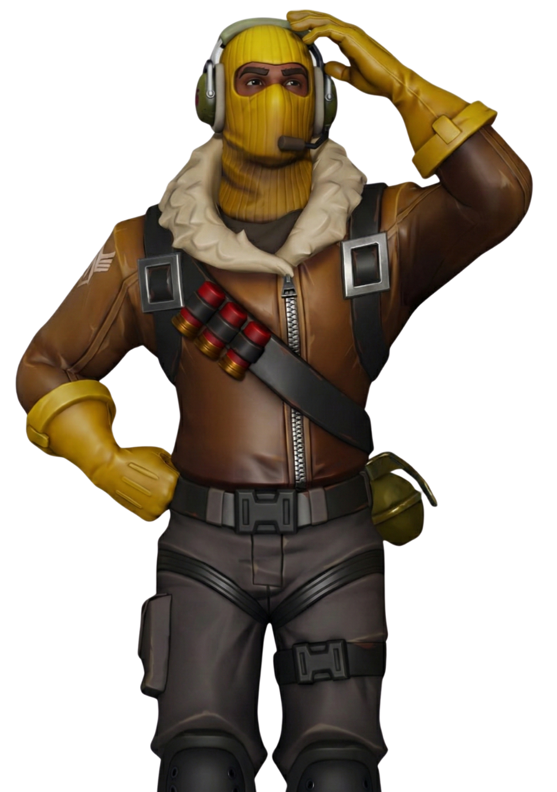
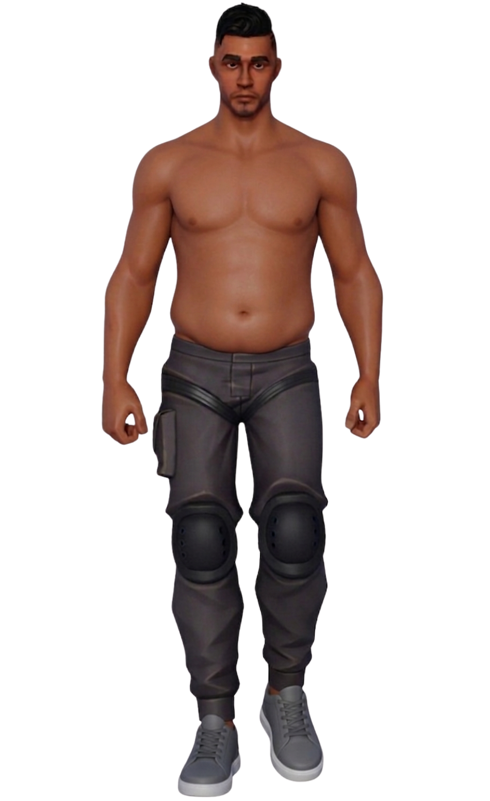
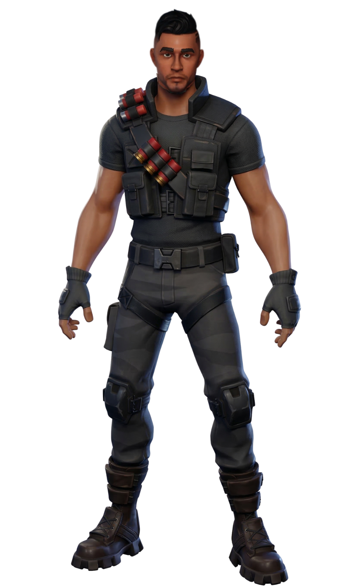

Raptor
// Archives Biographiques
L'Expert Tactique
Ancien pilote d'élite de la Royale Air Force happé sur Orion, Raptor est un survivant endurci reconnaissable à sa cagoule jaune, son casque radio et son indissociable fusil à canon scié. Cerveau stratégique du groupe, ce tacticien pragmatique identifie l'amulette de Barret comme une boussole menant au Point Zéro, une source d'énergie infinie qu'il traquait déjà par le passé. Sous son tempérament stoïque, ses sarcasmes et son surnom affectueux de "Face de Citron" — qui souligne son amitié rivale avec Barret —, se cache un frère d'armes d'une loyauté absolue, toujours prêt à faire parler la chevrotine ou à se jeter devant un tir de blaster pour protéger son escouade.
// Variantes Visuelles

